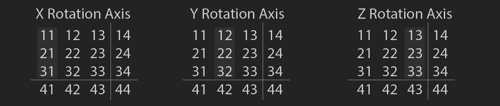
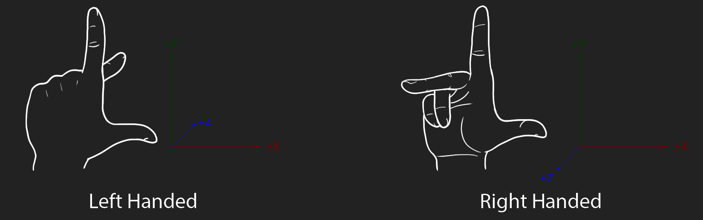

Matrices In Games
In my last matrix blog we covered how to work with matrices, in this blog we will discuss how matrices are used in games.
What's in a matrix?
The last blog covered that matrices can have different logical topology and storage topology. Things get a bit more confusing once we introduce handedness. Before talking about handedness, we need to take a detour and talk about what is commonly stored in a matrix. Games often use 4x4 matrices to store a transformation. When storing a transoformation as a 4x4 matrix:
- The rotation is stored in the upper 3x3 submatrix
- The scale is stored in the main diagonal
- Position is stored in the last row or column

Ortho normal matrices
Each row or column (depending on the logical major of the matrix) is called a basis vector. A 3x3 submatrix has 3 basis vectors representing the X, Y and Z axis of the matrix orientation. Each vector has three components.
If the basis vectors of a matrix are all 90 degrees from each other, the matrix is orthogonal. If the matrix is orthogonal and the basis vectors have unit length, the matrix is ortho-normal. Ortho normal matrices can represent a 3D coordinate system.
Recall that the cross product of two vectors is a third, orthogonal vector. Given forward, up and right basis vectors of a matrix, we can orthogonalize a matrix with two cross products. First the cross product of forward and up gives us right prime. Then the cross product of right prime and up gives us forward prime. Any other combination can work as well.
Handedness
Handedness is tied to the order of cross products. Let's assume that (1, 0, 0) is the right vector. Also that (0, 1, 0) is the up vector. The next question is, which way is forward? Does it point into the screen (0, 0, -1) (right handed, OpenGL style), or out of the screen (0, 0, 1) (left handed, Direct X style)? Depending on which direction forward is expected to point, the cross product for ortho normalizing a matrix needs to be flipped.
right (1, 0, 0)xup (0, 1, 0)=(0, 0, 1)up (0, 1, 0)xright (1, 0, 0)=(0, 0, -1)
So, why is this concept listed under "Handedness"? It's an easy way to remember which way the vectors of a matrix should point. Take both your hands and point your thumb, pointer finger and middle finger in orthogonal directions. Your thumb is the right vector, pointer finger is the up vector and middle finger is the forward vector. Rotate your left hand so both thumbs are facing right. Your right hand shows the z axis coming towards you, while your left hand shows the z axis pointing away from you.
These are just conventions. OpenGL doesn't actually define which way "world forward" points. It simply defines NDC (Normalized Device Coordinate) space. You could have world forward be along the positive z axis, moving "into the monitor", and simply flip the z axis as part of the NDC transform. This will be covered in depth in the projections and 3D pipeline sections of this blog post.
Handedness also implies rotation. In a left handed system, rotations happen clockwise around the axis of rotation. In a right handed coordinate system, rotations happen counter clockwise. This is generalizing rotations to how OpenGL and Direct X work. You could break this convention and rotate counter clockwise in a left handed system.
Interchanging the labels of any two axes reverses the handedness. Reversing the direction of one axis (or of all three axes) also reverses the handedness. (If the axes do not have a positive or negative direction then handedness has no meaning.) Reversing two axes amounts to a one hundred eighty degree rotation around the remaining axis
Personal preference
My personal preference is a right handed, column major matrix where rotations happen counter clockwise, positive z points out of the screen, column major matrix. The matrix class i wrote for Hands on C++ Game Animation Programming is the matrix i use in all my projects. My favortite thing about this is the anonymous union, which makes it easy to tell how the matrix is stored.
struct mat4 {
union {
float v[16];
struct {
vec4 right;
vec4 up;
vec4 forward;
vec4 position;
};
struct {
// row 1 row 2 row 3 row 4
/* column 1 */float xx; float xy; float xz; float xw;
/* column 2 */float yx; float yy; float yz; float yw;
/* column 3 */float zx; float zy; float zz; float zw;
/* column 4 */float tx; float ty; float tz; float tw;
};
struct {
float c0r0; float c0r1; float c0r2; float c0r3;
float c1r0; float c1r1; float c1r2; float c1r3;
float c2r0; float c2r1; float c2r2; float c2r3;
float c3r0; float c3r1; float c3r2; float c3r3;
};
struct {
float r0c0; float r1c0; float r2c0; float r3c0;
float r0c1; float r1c1; float r2c1; float r3c1;
float r0c2; float r1c2; float r2c2; float r3c2;
float r0c3; float r1c3; float r2c3; float r3c3;
};
};
inline mat4() :
xx(1), xy(0), xz(0), xw(0),
yx(0), yy(1), yz(0), yw(0),
zx(0), zy(0), zz(1), zw(0),
tx(0), ty(0), tz(0), tw(1) {}
};
No blog post about matrices would be complete without linking to The matrix and quaternion FAQ.